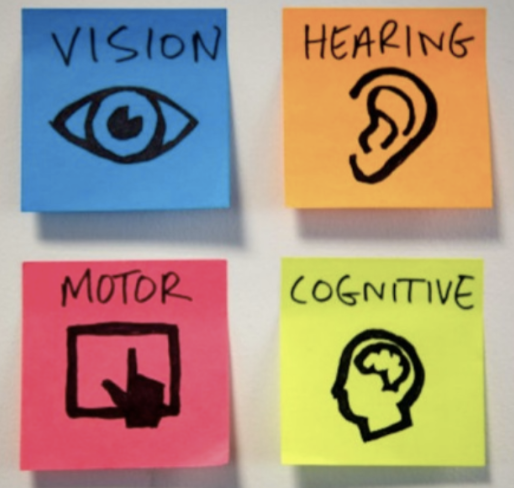
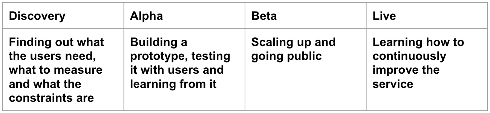

Accessibility - Leadership
by Julianna Rowsell
Intro
Hey there! I’m Julianna. I work on helping the Canadian Digital Service create accessible and inclusive services for Canadians.
- email: julianna.rowsell@cds-snc.ca
- github: JuliannaR
- twitter: @juliannarowsell
What is my role?
What is accessibility? It is barrier free access, it empowers people. My role isn't limited to web components, applications and interactions. Accessibility crosses sectors and teams. We need to be inclusive when we interact and provide services to people online and offline.
The government of Canada can be a leader in accessibility and inclusive design
Inclusive Design
Inclusive Design is design that considers the full range of human diversity with respect to ability, language, culture, gender, age and other forms of human difference.
Accessibility
Disability is the mismatch between the needs and preferences of the user and the system or environment.
Accessibility is the ability of the system of environment to accommodate the needs and preferences of the individual.
Are the Government of Canada’s products and services required to be accessible?
Web Content Accessibility Guidelines
- Outlines best practices for making web content universally perceivable, operable, understandable, and robust.
- Defines criteria for successful inclusive web design, with ascending levels of compliance (levels A, AA, and AAA).
- Is composed and reviewed by a global community of digital experts.
- Connects the world through common information technology and user experience standards.
Principles of WCAG 2.1
- Perceivable – Information and user interface components must be presentable to users in ways they can perceive
- Operable – User interface components and navigation must be operable
- Understandable – Information and the operation of user interface must be understandable
- Robust – Content must be robust enough that it can be interpreted reliably by a wide variety of user agents, including assistive technologies
Meeting government accessibility requirements
Digital products and services in the Government of Canada must meet WCAG 2.0 AA. CDS has adopted and is striving to meet WCAG 2.1 AA. (Released in June 2018 and already adopted officially by the UK, Australia and Japan.
Globally 1-5 people have a disability
Build for all users, with different needs at different times in different circumstances.

Accessibility is about making sure your service can be used by as many people as possible.
Accessibility doesn’t have to be overwhelming
- Build accessibility into the beginning of a product. Not only will it save time, but also resources.
- Shorten update/release change process by clearing hurdles and lengthy approvals.
- Reach out and include persons with disabilities throughout product discovery, design, development, and delivery phases.
- Build awareness on the product teams in order to improve the service. Encourage delivery team members to engage within the community, being open to feedback and striving to make things better.
- Embed accessibility champions on product teams in different roles to improve reach, awareness, and understanding of accessibility issues.
Start considering accessibility early

What can we plan to do to help improve the human experience of digital services?
Route Map for Accessibility
Our route map for accessibility:
- Do design research with people
- Include persons with disabilities throughout the process
- Be pragmatic, go forward with accessibility in mind, take corrective measures as needed
- Build capacity in inclusive practices
- Prioritize change, consider impact, reach, modernization, requests/analytics, and feasibility
- Assign budget (it’s necessary, worthwhile, and the law)
- Tap into expertise across government
- Plan for continued progressive improvement
- Goal: Make it better than it was yesterday.
Accessibility is everyone’s responsibility
Accessibility is multidisciplinary
- Content creator (client/partner)
- Designer
- Developer
- User Researcher
- Product Manager
- Policy
- SME’s
The usual approach to accessibility is a problem
How to make an existing content or service accessible
- Make accessibility part of your design research
- Test with users with diverse needs
- Use automated testing tools
- Hire an accessibility subject matter expert to give you advice
- Test your product or service manually for accessibility
- Conduct an accessibility audit
- Make the required fixes
Accessibility Misunderstanding
Like usability, accessibility should be built in at the start. It’s poorly functioning as an afterthought. We cannot bolt on accessibility and expect accessible products and services.
Why is accessibility hard?
Little design choices made without understanding accessibility issues and criteria - they add up and lead to inaccessible services.
How do we do better?
- Research guidelines
- Ask Questions
- Follow the answers
- Analyse the results
- Repeat until insight
Accessibility is everyone’s responsibility